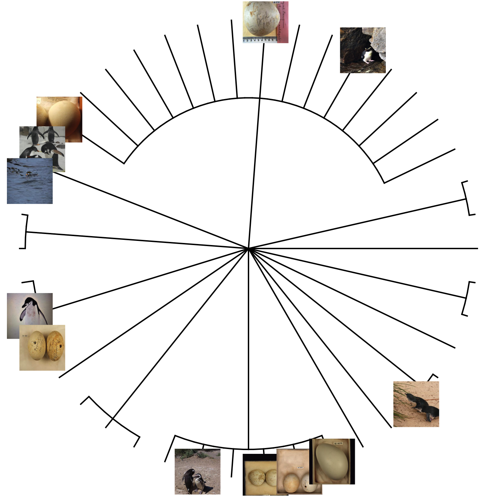
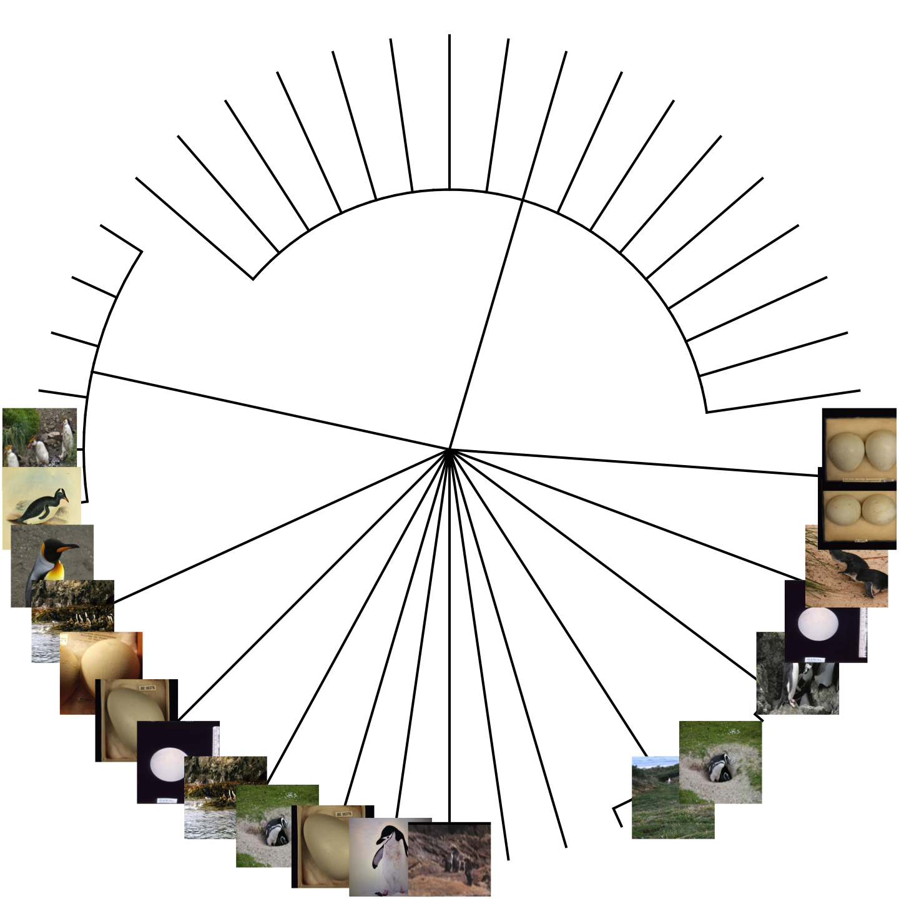
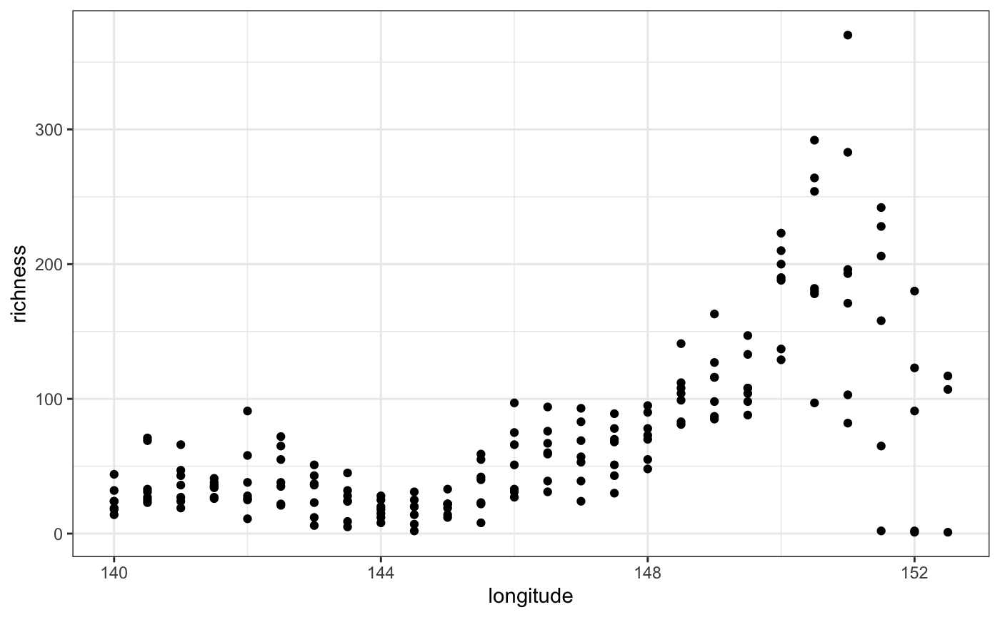
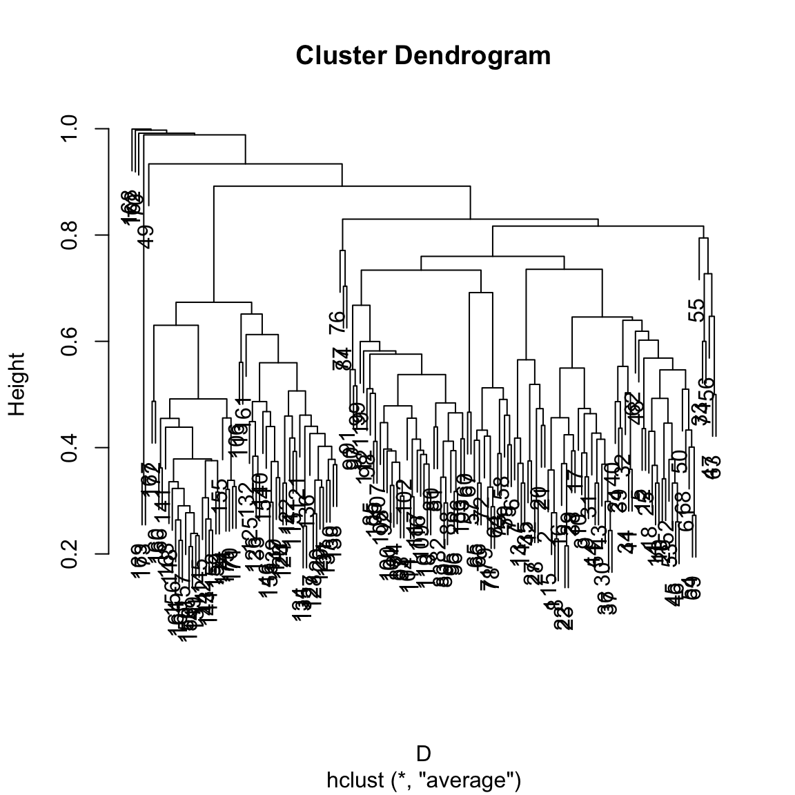
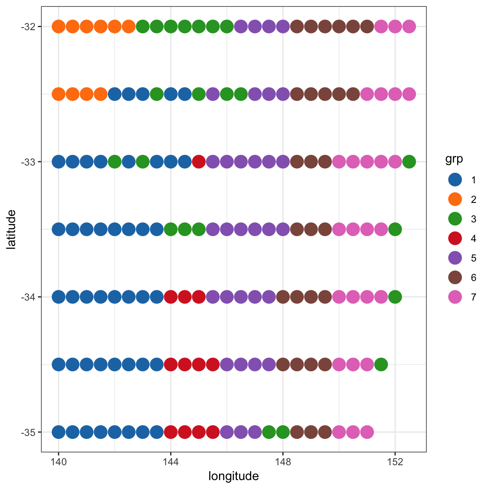
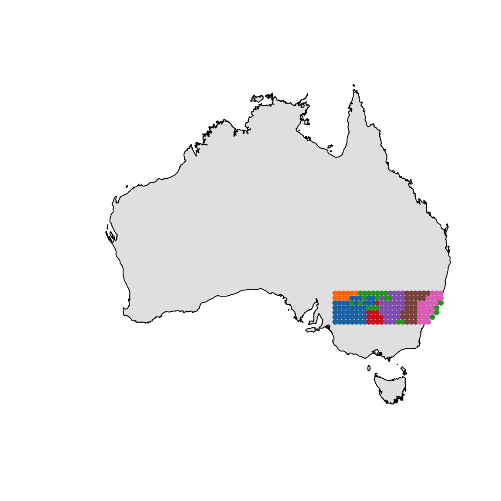

d # ALA4R
The Atlas of Living Australia (ALA) provides tools to enable users of biodiversity information to find, access, combine and visualise data on Australian plants and animals; these have been made available from https://www.ala.org.au/. Here we provide a subset of the tools to be directly used within R.
ALA4R enables the R community to directly access data and resources hosted by the ALA.
Stable version from CRAN:
install.packages("ALA4R")Or the development version from GitHub:
install.packages("devtools")
devtools::install_github("AtlasOfLivingAustralia/ALA4R")On Linux you will first need to ensure that libcurl and v8 (version <= 3.15) are installed on your system — e.g. on Ubuntu/Debian, open a terminal and do:
sudo apt-get install libcurl4-openssl-dev libv8-3.14-devor install via the Software Centre.
Various aspects of the ALA4R package can be customized.
ALA4R can cache most results to local files. This means that if the same code is run multiple times, the second and subsequent iterations will be faster. This will also reduce load on the ALA servers.
By default, this caching is session-based, meaning that the local files are stored in a temporary directory that is automatically deleted when the R session is ended. This behaviour can be altered so that caching is permanent, by setting the caching directory to a non-temporary location. For example, under Windows, use something like:
ala_config(cache_directory="c:/mydata/ala_cache") ## use forward slashes, not \or for Linux:
ala_config(cache_directory="~/mydata/ala_cache")Note that this directory must exist (you need to create it yourself).
All results will be stored in that cache directory and will be used from one session to the next. They won’t be re-downloaded from the server unless the user specifically deletes those files or changes the caching setting to “refresh”.
If you change the cache_directory to a permanent location, you may wish to add something like this to your .Rprofile file, so that it happens automatically each time the ALA4R package is loaded:
setHook(packageEvent("ALA4R", "attach"), function(...)
ala_config(cache_directory=file.path("~", "mydata", "ala_cache")))Caching can also be turned off entirely by:
ala_config(caching="off")or set to “refresh”, meaning that the cached results will re-downloaded from the ALA servers and the cache updated. (This will happen for as long as caching is set to “refresh” — so you may wish to switch back to normal “on” caching behaviour once you have updated your cache with the data you are working on).
Each request to the ALA servers is accompanied by a “user-agent” string that identifies the software making the request. This is a standard behaviour used by web browsers as well. The user-agent identifies the user requests to the ALA, helping the ALA to adapt and enhance the services that it provides. By default, the ALA4R user-agent string is set to “ALA4R” plus the ALA4R version number (e.g. “ALA4R 1.5.2”).
NO personal identification information is sent. You can see all configuration settings, including the the user-agent string that is being used, with the command:
If things aren’t working as expected, more detail (particularly about web requests and caching behaviour) can be obtained by setting the verbose configuration option:
ala_config(verbose=TRUE)ALA requires that you provide a reason when downloading occurrence data (via the ALA4R occurrences() function). You can provide this as a parameter directly to each call of occurrences(), or you can set it once per session using:
ala_config(download_reason_id=your_reason_id)(See ala_reasons() for valid download reasons)
If you make a request that returns an empty result set (e.g. an un-matched name), by default you will simply get an empty data structure returned to you without any special notification. If you would like to be warned about empty result sets, you can use:
ala_config(warn_on_empty=TRUE)First, check that we have some additional packages that we’ll use in the examples, and install them if necessary.
to_install <- c("ape", "dplyr", "ggplot2", "jpeg", "maps", "mapdata",
"maptools", "phytools", "tidyr", "vegan")
to_install <- to_install[!sapply(to_install, requireNamespace, quietly=TRUE)]
if(length(to_install)>0)
install.packages(to_install, repos="http://cran.us.r-project.org")
## In these examples we use the `dplyr` package to help with data manipulation.
library(dplyr)## Warning: package 'dplyr' was built under R version 3.4.4library(ape)## Warning: package 'ape' was built under R version 3.4.4library(phytools)## Warning: package 'phytools' was built under R version 3.4.4## Warning: package 'maps' was built under R version 3.4.4Let’s say that we want to look at the taxonomic tree of penguins but we don’t know what the correct scientific name is. Start by searching for it:
sx <- search_fulltext("penguins")
sx$data %>% dplyr::select(name, rank, commonName)We can see that penguins correspond to the family “SPHENISCIDAE”. Now we can download the taxonomic data (note that the search is case-sensitive):
tx <- taxinfo_download("rk_family:SPHENISCIDAE", fields=c("guid", "rk_genus", "scientificName", "rank"))
## keep only species and subspecies records
tx <- tx %>% dplyr::filter(rank %in% c("species","subspecies"))We can make a taxonomic tree plot using the phytools package:
## as.phylo requires the taxonomic columns to be factors
tx <- tx %>% mutate_all(as.factor)
## create phylo object of Scientific.Name nested within Genus
ax <- as.phylo(~genus/scientificName, data=tx)
plotTree(ax, type="fan", fsize=0.7) ## plot it
We can also plot the tree with images of the different penguin species. We can first extract a species profile for each species identifier (guid) in our results:
s <- search_guids(tx$guid)For each of those species profiles, download the thumbnail image and store it in our data cache:
imfiles <- sapply(s$thumbnailUrl, function(z) {
ifelse(!is.na(z), ALA4R:::cached_get(z, type="binary_filename"), "")
})And finally, plot the tree:
## plot tree without labels
plotTree(ax, type="fan", ftype="off")
## get the tree plot object
tr <- get("last_plot.phylo", envir = .PlotPhyloEnv)
## add each image
library(jpeg)
for (k in which(nchar(imfiles)>0))
rasterImage(readJPEG(imfiles[k]), tr$xx[k]-1/10, tr$yy[k]-1/10, tr$xx[k]+1/10, tr$yy[k]+1/10)
A number of species may have no image (mostly, these are extinct species) and others are images of eggs rather than animals, but you get the idea.
First download an example shapefile of South Australian conservation reserve boundaries: see http://data.sa.gov.au/dataset/conservation-reserve-boundaries. We use the ALA4R’s caching mechanism here, but you could equally download this file directly.
library(maptools)
shape_filename <- "https://data.environment.sa.gov.au/NatureMaps/Documents/CONSERVATION_Npwsa_Reserves_shp.zip"
## download to temporary file and unzip it to the ALA4R cache directory
tf <- tempfile()
download.file(shape_filename, tf)
unzip(tf, exdir=ala_config()$cache_directory)
shape <- readShapePoly(file.path(ala_config()$cache_directory, "CONSERVATION_NpwsaReserves.shp"))
## extract just the Morialta Conservation Park polygon
shape <- shape[shape$RESNAME=="Morialta", ]We could create the WKT string using the rgeos library:
Unfortunately, in this instance this gives a WKT string that is too long and won’t be accepted by the ALA web service. Instead, let’s construct the WKT string directly, which gives us a little more control over its format:
lonlat <- shape@polygons[[1]]@Polygons[[1]]@coords ## extract the polygon coordinates
## extract the convex hull of the polygon to reduce the length of the WKT string
temp <- chull(lonlat)
lonlat <- lonlat[c(temp, temp[1]), ]
## create WKT string
## first join each lon-lat coordinate pair
temp <- apply(lonlat, 1, function(z) paste(z, collapse=" "))
## now build the WKT string
wkt <- paste("POLYGON((", paste(temp, collapse=","), "))", sep="")Now extract the species list in this polygon, filtering to only include those with a conservation status:
specieslist(wkt=wkt, fq="state_conservation:*") %>%
dplyr::arrange(desc(occurrenceCount)) %>%
dplyr::select(speciesName, commonName, occurrenceCount) %>%
head(10)## speciesName commonName occurrenceCount
## 1 Calyptorhynchus (Zanda) funereus Yellow-Tailed Black-Cockatoo 281
## 2 Falco (Hierofalco) peregrinus Peregrine Falcon 64
## 3 Hylacola pyrrhopygia parkeri 58
## 4 Eucalyptus fasciculosa Hill Gum 57
## 5 Spyridium spathulatum Spoon-Leaf Spyridium 42
## 6 Anthocercis angustifolia Narrow-Leaf Ray-Flower 30
## 7 Egernia cunninghami Cunningham's Skink 27
## 8 Austrostipa multispiculis Many-Flowered Spear-Grass 21
## 9 Isoodon obesulus obesulus 21
## 10 Prasophyllum pruinosum 16Data quality assertions are a suite of fields that are the result of a set of tests peformed on ALA data. Download occurrence data for the golden bowerbird (you should adjust the download_reason_id to match your purposes if using this function for your own analyses; see ala_reasons()):
x <- occurrences(taxon="taxon_name:\"Amblyornis newtonianus\"", download_reason_id="testing")
summary(x)## number of original names: 8
## number of taxonomically corrected names: 1
## number of observation records: 1722
## number of assertions listed: 16 -- ones with flagged issues are listed below
## invalidCollectionDate: 413 records
## incompleteCollectionDate: 453 records
## firstOfCentury: 6 records
## uncertaintyRangeMismatch: 24 records
## firstOfYear: 35 records
## altitudeInFeet: 2 records
## geodeticDatumAssumedWgs84: 848 records
## decimalLatLongConverted: 77 records
## unrecognisedOccurrenceStatus: 1 records
## coordinatePrecisionMismatch: 55 records
## countryInferredByCoordinates: 83 records
## assumedPresentOccurrenceStatus: 288 records
## stateCoordinateMismatch: 1 records
## habitatMismatch: 1 records -- considered fatal
## inferredDuplicateRecord: 27 records
## firstOfMonth: 79 recordsYou can see that some of the points have assertions that are considered “fatal” (i.e. the occurrence record in question is unlikely to be suitable for subsequent analysis). We can use the occurrences_plot function to create a PDF file with a plot of this data, showing the points with fatal assertions (this will create an “Rplots.pdf” file in your working directory; not run here):
occurrences_plot(x, qa="fatal")There are many other ways of producing spatial plots in R. The leaflet package provides a simple method of producing browser-based maps iwth panning, zooming, and background layers (again, not run here):
library(leaflet)
## drop any records with missing lat/lon values
x$data <- x$data[!is.na(x$data$longitude) & !is.na(x$data$latitude), ]
xa <- check_assertions(x)
## columns of x corresponding to a fatal assertion
x_afcols <- which(names(x$data) %in% xa$occurColnames[xa$fatal])
## rows of x that have a fatal assertion
x_afrows <- apply(x$data[, x_afcols], 1, any)
## which fatal assertions are present in this data?
these_assertions <- names(x$data)[x_afcols]
## make a link to th web page for each occurrence
popup_link <- paste0("<a href=\"https://biocache.ala.org.au/occurrences/", x$data$id, "\">Link to occurrence record</a>")
## colour palette
pal <- c(sub("FF$", "", heat.colors(length(these_assertions))))
## map each data row to colour, depending on its assertions
marker_colour <- rep("#00FF00", nrow(x$data))
for (k in 1:length(these_assertions)) marker_colour[x$data[, x_afcols[k]]] <- pal[k]
## blank map, with imagery background
m <- addProviderTiles(leaflet(), "Esri.WorldImagery")
## add markers
m <- addCircleMarkers(m, x$data$longitude, x$data$latitude, col=marker_colour, popup=popup_link)
print(m)library(vegan)## Warning: package 'vegan' was built under R version 3.4.4## Warning: package 'permute' was built under R version 3.4.4Define our area of interest as a transect running westwards from the Sydney region, and download the occurrences of legumes (Fabaceae; a large family of flowering plants) in this area:
wkt <- "POLYGON((152.5 -35,152.5 -32,140 -32,140 -35,152.5 -35))"
## define some environmental layers of interest [see ala_fields()]
env_layers <- c("Precipitation - annual","Temperature - annual max mean")
## Download the data. We use the `occurrences()` function, adding environmental
## data via the 'extra' parameter. Note that method="offline" supports
## unlimited download size and more fields (but is slower).
## You should adjust the `download_reason_id` to match your purposes if using
## this function for your own analyses; see `ala_reasons()`
x <- occurrences(taxon="family:Fabaceae", wkt=wkt, qa="none",
download_reason_id="testing", extra=env_layers)Convert this to a sites-by-species data.frame:
xgridded <- x$data %>%
## discard genus- and higher-level records
dplyr::filter(rank %in%
c("species", "subspecies", "variety", "form", "cultivar")) %>%
## bin into 0.5-degree bins
mutate(longitude=round(longitude*2)/2, latitude=round(latitude*2)/2) %>%
## average environmental vars within each bin
group_by(longitude,latitude) %>%
mutate(precipitationAnnual=mean(precipitationAnnual, na.rm=TRUE),
temperatureAnnualMaxMean=mean(temperatureAnnualMaxMean, na.rm=TRUE)) %>%
## subset to vars of interest
dplyr::select(longitude, latitude, scientificName, precipitationAnnual,
temperatureAnnualMaxMean) %>%
## take one row per cell per species (presence)
distinct() %>%
## calculate species richness
mutate(richness=n()) %>%
## convert to wide format (sites by species)
mutate(present=1) %>%
do(tidyr::spread(data=., key=scientificName, value=present, fill=0)) %>%
ungroup()
## where a species was not present, it will have NA: convert these to 0
sppcols <- setdiff(names(xgridded),
c("longitude", "latitude", "precipitationAnnual", "temperatureAnnualMaxMean",
"richness"))
xgridded <- xgridded %>% mutate_at(sppcols, function(z) ifelse(is.na(z), 0, z))The end result:
xgridded## # A tibble: 175 x 847
## longitude latitude precipitationAn… temperatureAnnu… richness `Acacia acinace… `Acacia brachyb… `Acacia calamif…
## <dbl> <dbl> <dbl> <dbl> <int> <dbl> <dbl> <dbl>
## 1 140 -35 303. 22.5 24 1 1 1
## 2 140 -34.5 276. 23.0 32 0 1 1
## 3 140 -34 247. 23.5 44 0 1 0
## 4 140 -33.5 226. 23.9 24 0 0 1
## 5 140 -33 213 24.0 14 0 0 0
## 6 140 -32.5 221. 23.3 18 0 0 0
## 7 140 -32 193. 24.1 19 0 0 0
## 8 140. -35 294. 22.6 33 0 1 1
## 9 140. -34.5 256. 23.4 69 1 1 0
## 10 140. -34 248. 23.7 71 1 1 1
## # … with 165 more rows, and 839 more variables: `Acacia euthycarpa` <dbl>, `Acacia hakeoides` <dbl>, `Acacia
## # halliana` <dbl>, `Acacia ligulata` <dbl>, `Acacia lineata` <dbl>, `Acacia microcarpa` <dbl>, `Acacia
## # notabilis` <dbl>, `Acacia pycnantha` <dbl>, `Acacia rigens` <dbl>, `Acacia sclerophylla var. sclerophylla` <dbl>,
## # `Acacia spinescens` <dbl>, `Acacia wilhelmiana` <dbl>, `Aotus subspinescens` <dbl>, `Dillwynia hispida` <dbl>,
## # `Dillwynia uncinata` <dbl>, `Eutaxia microphylla` <dbl>, `Medicago minima` <dbl>, `Phyllota pleurandroides` <dbl>,
## # `Pultenaea densifolia` <dbl>, `Pultenaea tenuifolia` <dbl>, `Senna artemisioides subsp. filifolia` <dbl>, `Acacia
## # acanthoclada` <dbl>, `Acacia acanthoclada subsp. acanthoclada` <dbl>, `Acacia ancistrophylla var.
## # lissophylla` <dbl>, `Acacia colletioides` <dbl>, `Acacia myrtifolia` <dbl>, `Acacia nyssophylla` <dbl>, `Acacia
## # oswaldii` <dbl>, `Acacia tetragonophylla` <dbl>, `Daviesia arenaria` <dbl>, `Eutaxia diffusa` <dbl>, `Glycyrrhiza
## # acanthocarpa` <dbl>, `Medicago laciniata` <dbl>, `Pultenaea prostrata` <dbl>, `Senna artemisioides` <dbl>,
## # `Swainsona pyrophila` <dbl>, `Templetonia rossii` <dbl>, `Acacia argyrophylla` <dbl>, `Acacia farinosa` <dbl>,
## # `Acacia montana` <dbl>, `Acacia sclerophylla` <dbl>, `Acacia stenophylla` <dbl>, `Acacia victoriae subsp.
## # victoriae` <dbl>, `Alhagi maurorum` <dbl>, `Cullen pallidum` <dbl>, `Daviesia benthamii` <dbl>, `Daviesia benthamii
## # subsp. acanthoclona` <dbl>, `Daviesia benthamii subsp. humilis` <dbl>, `Lotus cruentus` <dbl>, `Medicago
## # polymorpha` <dbl>, `Medicago truncatula` <dbl>, `Melilotus indicus` <dbl>, `Senna artemisioides subsp.
## # zygophylla` <dbl>, `Swainsona formosa` <dbl>, `Swainsona greyana` <dbl>, `Swainsona microphylla` <dbl>,
## # `Templetonia egena` <dbl>, `Vicia monantha` <dbl>, `Senna artemisioides subsp. x coriacea` <dbl>, `Swainsona
## # oliveri` <dbl>, `Swainsona stipularis` <dbl>, `Acacia aneura` <dbl>, `Acacia aneura var. aneura` <dbl>, `Acacia
## # burkittii` <dbl>, `Astragalus sesameus` <dbl>, `Swainsona viridis` <dbl>, `Acacia ayersiana` <dbl>, `Acacia
## # beckleri` <dbl>, `Acacia carneorum` <dbl>, `Acacia victoriae` <dbl>, `Astragalus hamosus` <dbl>, `Cullen
## # cinereum` <dbl>, `Glycine rubiginosa` <dbl>, `Swainsona fuscoviridis` <dbl>, `Acacia pendula` <dbl>, `Acacia
## # salicina` <dbl>, `Cullen australasicum` <dbl>, `Glycine clandestina` <dbl>, `Indigofera australis subsp.
## # australis` <dbl>, `Swainsona murrayana` <dbl>, `Swainsona phacoides` <dbl>, `Daviesia ulicifolia` <dbl>, `Dillwynia
## # sericea` <dbl>, `Lotus preslii` <dbl>, `Acacia cochlearis` <dbl>, `Acacia cupularis` <dbl>, `Acacia euthycarpa
## # subsp. euthycarpa` <dbl>, `Acacia havilandiorum` <dbl>, `Bossiaea rupicola` <dbl>, `Caesalpinia gilliesii` <dbl>,
## # `Cullen discolor` <dbl>, `Cullen patens` <dbl>, `Lotus australis` <dbl>, `Lupinus cosentinii` <dbl>, `Medicago
## # littoralis` <dbl>, `Medicago sativa` <dbl>, `Melilotus albus` <dbl>, `Retama raetam` <dbl>, `Robinia
## # pseudoacacia` <dbl>, `Senna artemisioides subsp. x petiolaris` <dbl>, …Now we can start to examine the patterns in the data. Let’s plot richness as a function of longitude:
library(ggplot2)
ggplot(xgridded, aes(longitude, richness)) + geom_point() + theme_bw()
The number of species is highest at the eastern end of the transect (the Sydney/Blue Mountains area). This probably reflects both higher species richness as well as greater sampling effort in this area compared to the western end of the transect.
Species richness as a function of environment:
ggplot(xgridded, aes(temperatureAnnualMaxMean, precipitationAnnual, colour=richness)) +
scale_colour_distiller(palette="Spectral") + geom_point(size=8) + theme_bw()Higher species richness in cooler, wetter areas (i.e. the Blue Mountains).
How does the community composition change along the transect? Use clustering:
## Bray-Curtis dissimilarity
D <- vegdist(xgridded[, sppcols], "bray")
## UPGMA clustering
cl <- hclust(D, method="ave")
## plot the dendrogram
plot(cl)
## extract group labels at the 20-group level
grp <- cutree(cl, 20)
## coalesce small (outlier) groups into a single catch-all group
sing <- which(table(grp)<5)
grp[grp %in% sing] <- 21 ## put these in a new combined group
grp <- sapply(grp, function(z)which(unique(grp)==z)) ## renumber groups
xgridded$grp <- as.factor(grp)
## plot
## colours for clusters
thiscol <- c("#1f77b4", "#ff7f0e", "#2ca02c", "#d62728", "#9467bd", "#8c564b", "#e377c2",
"#7f7f7f", "#bcbd22", "#17becf")
ggplot(xgridded, aes(longitude, latitude, colour=grp)) + geom_point(size=5) +
scale_colour_manual(values=thiscol) + theme_bw()
## Warning: package 'mapdata' was built under R version 3.4.4map("worldHires", "Australia", xlim=c(105, 155), ylim=c(-45, -10), col="gray90", fill=TRUE)
with(xgridded, points(longitude, latitude, pch=21, col=thiscol[grp], bg=thiscol[grp], cex=0.75))